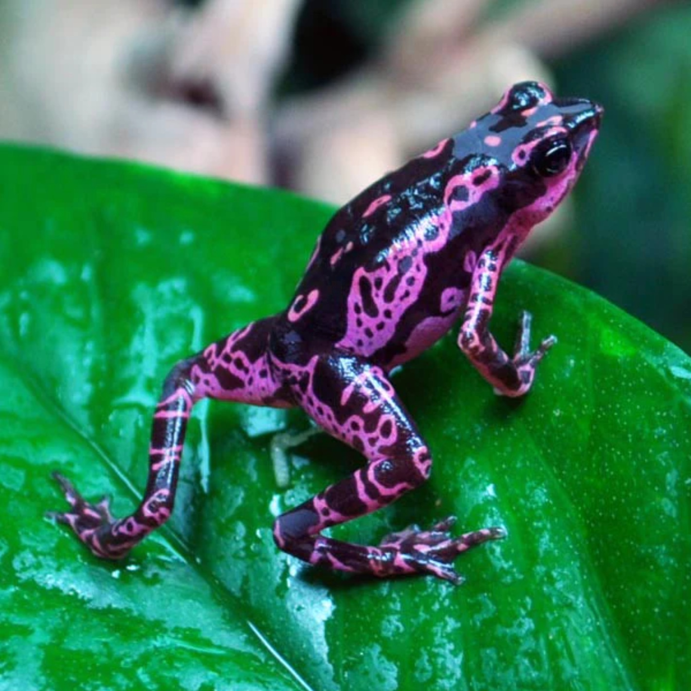

Poison Dart Frogs
Expansions
Dart Frog Information
Click here on one of these websites to read more about Dart Frogs. These websites will give you more information on how Dart frogs eat live and reproduce.

Baby Dart Frogs
Baby Dart Frogs also know has tadpoles only stay tadepoles for about 2-3 months. The best time for bbay frogs are around March. Where it is warm in tropical places.
 Expansions
Expansions
Dart Frogs Colors
dart Frog colors are very important to their survial. These bright colors warn predators to stay away! New studies show these bright colors actally help the frogs hide in plain sight. many animals are color blind and will overlook the frogs.
 About Frogs